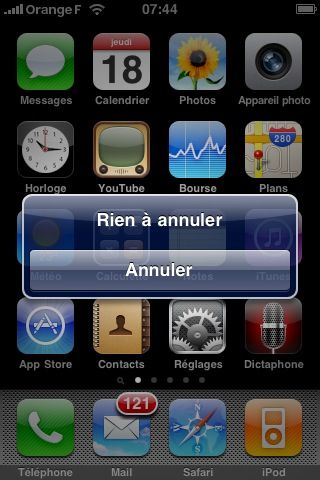
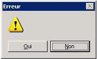
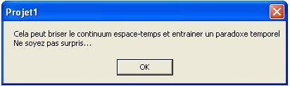
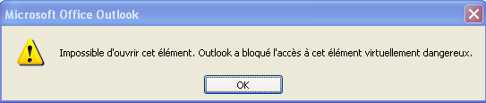
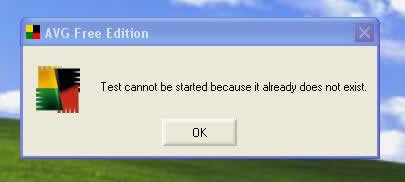
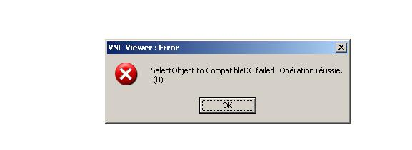

Pas de titre

Est-ce que ?




Virtuellement, ton ordinateur va agoniser dans d'affreuses souffrances. Dans la vraie vie tu ferais mieux d'aller tondre la pelouse !

Tu t'y attendais pas à celle-là !

L'échec a réussi
